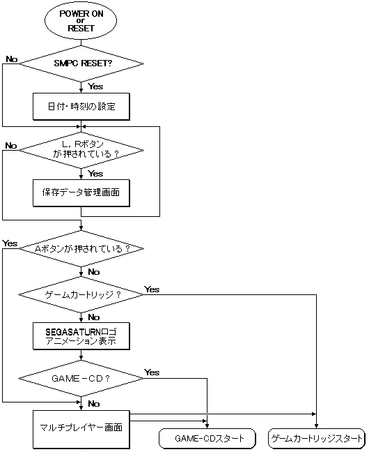

★PROGRAMMER'S GUIDE
★BOOT ROMユーザーズマニュアル/
★PROGRAMMER'S GUIDE
★BOOT ROMユーザーズマニュアル/
▲
戻る｜
進む▼
BOOT ROMユーザーズマニュアル
BOOT ROMの処理の流れ
■処理フロー
- SEGASATURNのロゴ表示中にGAME-CDを認識すると、
自動的にゲームをスタートさせます。
GAME-CD以外の場合は、マルチプレイヤーを実行します。
図1 BOOT ROMの処理フロー概略

■注意事項
- ●CDが入っていない場合、CDドアが開いている場合
- マルチプレイヤーで、それぞれ、「CDが入っていません」、「CDドアが開いています」と表示します。
- ●ゲームカートリッジがセットされている場合
- ゲームカートリッジが優先されます。GAME-CDを起動するためには、電源をオフにしてカートリッジを取りはずしてください。
■商品版とターゲットボックス版の違い
- ●デバックサポート用SCSIデバイス
- 商品版の機能に加えてターゲットボックス版には、デバッグサポートのためにSCSIデバイスとSIMMメモリをチェックしてゲームを起動する機能が追加されています。SCSIデバイスとSIMMメモリをチェックして、[IP.BIN］というファイル名が存在するとそこからゲームを起動しようと試みます。
個々の使用方法は、「簡易ＣＤシミュレータユーザーズマニュアル」を参照してください。
- ●システムディスク不要
- ターゲットボックス版では、システムディスクを使用しなくても、ライトワンスＣＤからゲームを起動することができます。
▲
戻る｜
進む▼
★PROGRAMMER'S GUIDE
★BOOT ROMユーザーズマニュアル/
Copyright SEGA ENTERPRISES, LTD., 1997